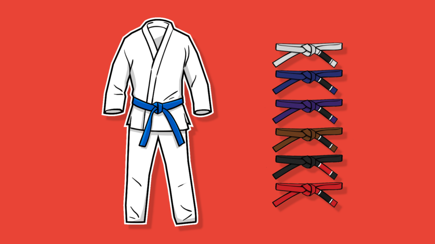
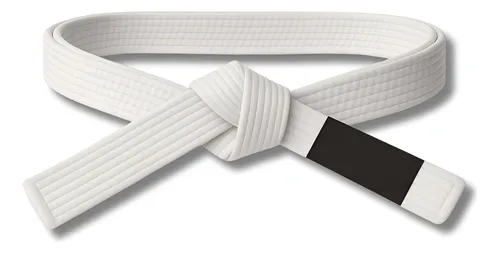
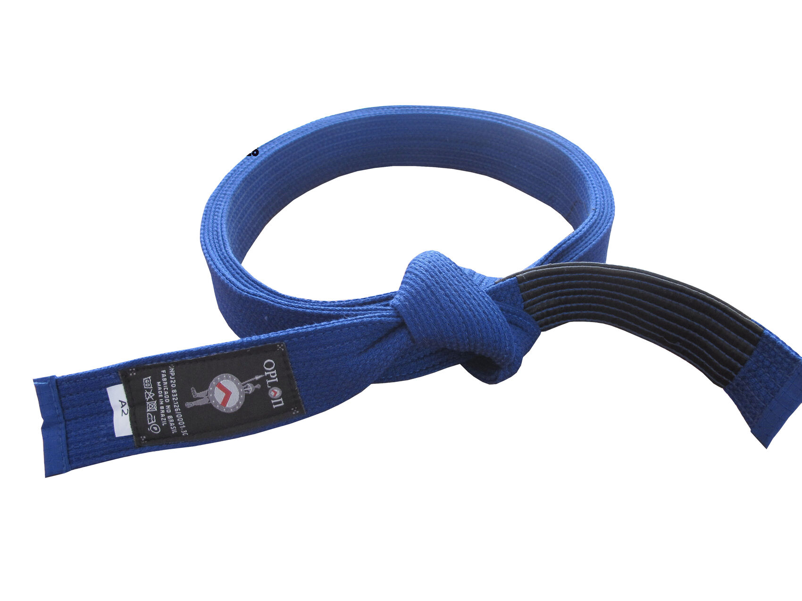
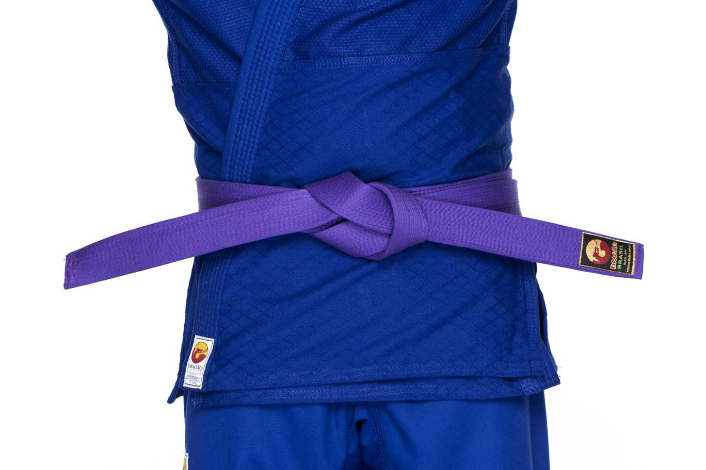
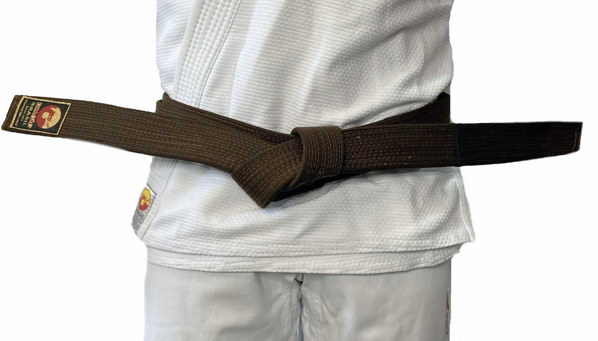
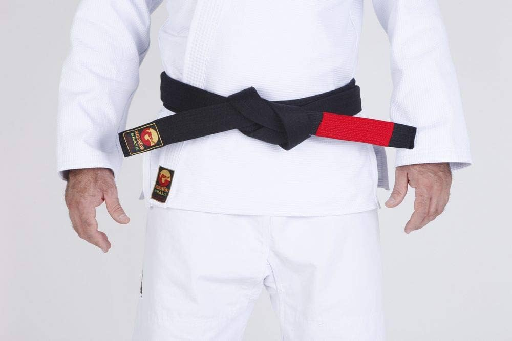

HISTÓRIA
O JIU JITSU tem raízes antigas no Japão como a "arte suave" dos samurais, mas o estilo moderno (BJJ) surgiu no Brasil no início do século XX. O mestre japonês Mitsuyo Maeda (Conde Koma) ensinou a Carlos Gracie em Belém (1915-1917), que repassou aos irmãos, incluindo Hélio Gracie, que adaptou técnicas para o combate no chão focado em alavancas e finalizações, permitindo que menores vençam maiores.

BRANCA
Branca (Início)

AZUL
Azul (A partir de 16 anos)

ROXA
Roxa (A partir de 16 anos)

MARROM
Marrom (A partir de 17 anos)

PRETA
Preta (A partir de 18 anos)

Graus e Faixas Infantis:
- Graus: Faixas branca, azul, roxa e marrom têm 4 graus (ponteiras brancas na faixa adulta). A faixa preta usa ponteira vermelha com até 6 graus.
- Infantil (abaixo de 16 anos): Inclui faixas cinza, amarela, laranja e verde, com subfaixas (branca, preta).
- O tempo para a faixa preta 1º grau é de aproximadamente 3 anos após receber a preta. As faixas coral e vermelha exigem décadas de dedicação.
| Item | Descrição | Prioridade |
|---|---|---|
| BRANCA | A PRIMEIRA FAIXA | SEM TEMPO MINIMO |
| AZUL | SEGUNDA FAIXA | MINIMO 2 ANOS |
| ROXA | TERCEIRA FAIXA | MINIMO 1 ANO E 6 MESES |
| MARROM | QUARTA FAIXA | MINIMO 1 ANO |
| PRETA | QUINTA FAIXA | 1º ao 6º grau |